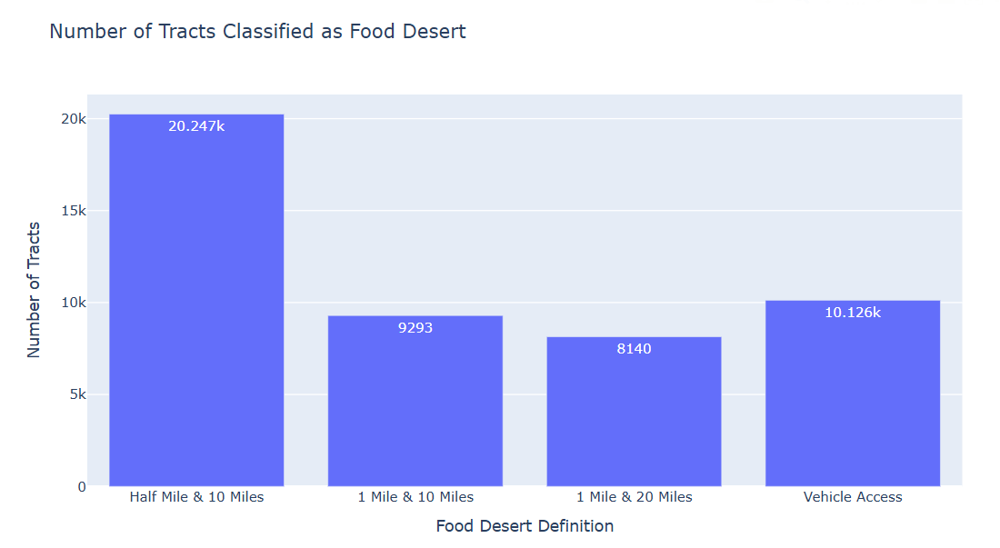
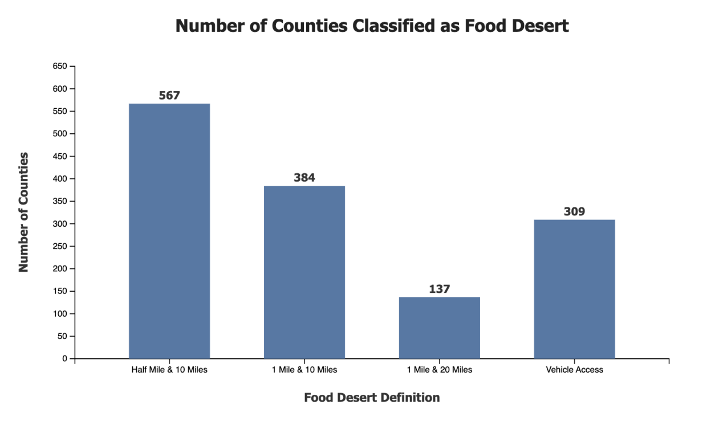
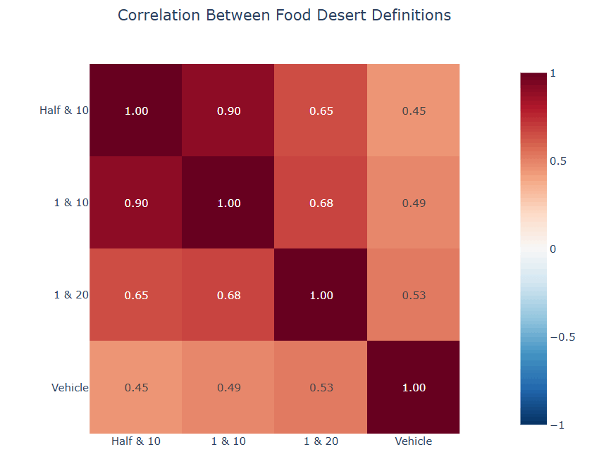
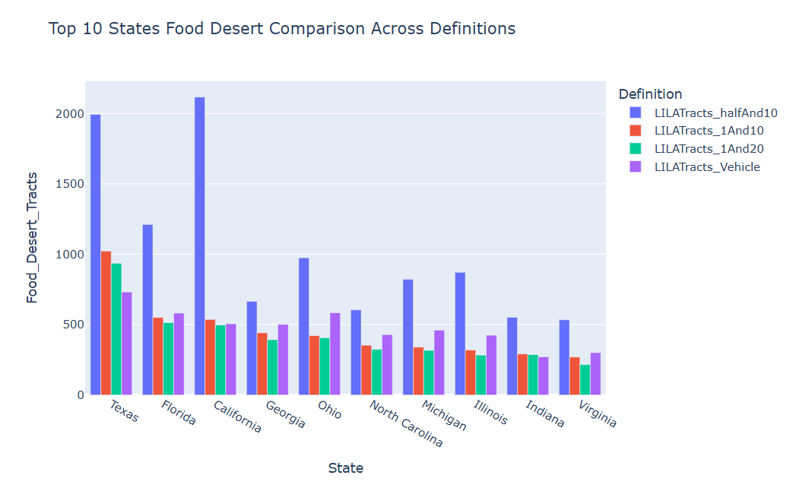

There is a statistically significant difference among the number of food deserts according to each USDA definition.
First, let's define the term census tract.
To put it simply, a census tract is a statistical subdivision of a county and is roughly based on population numbers (may vary between 1,000 and 8,000 people).
In this project, we use the Low-income, Low-access (LILA) definitions from the U.S. Department of Agriculture (USDA) to define the term food desert. In other words, a census tract is considered a food desert if it meets the low-income and low-access thresholds.
Low-income: According to the USDA, a census tract must either have a poverty rate of 20% or greater, or a median family income less than or equal to 80% of the state-wide measure to be considered low-income.
Low-access: A low-access census tract must have a significant share of its population live far away from a supermarket or a large grocery store.
A low-income census tract in which at least 500 people or 33% of the population live more than 1 mile away (in the case of urban tracts), or 10 miles away from a supermarket or a large grocery store.
A low-income census tract in which at least 500 people or 33% of the population live more than 0.5 mile away (in the case of urban tracts), or 10 miles away from a supermarket or a large grocery store.
A low-income census tract in which at least 500 people or 33% of the population live more than 1 mile away (in the case of urban tracts), or 20 miles away from a supermarket or a large grocery store.
A low-income tract in which at least 100 households live 0.5 mile away from the nearest supermarket or large grocery store and have no access to vehicle; or at least 500 people or 33% of the population live more than 20 miles from the nearest supermarket, regardless of vehicle access.

Figure 1. A column chart that compares the number of food deserts nationwide according to each USDA definition.
Figure 1 shows that there is a noticeable difference between the counts of food deserts for each definition.
We observe that Definition 1 (0.5 mile for urban and 10 miles for rural areas) is the least restrictive among the four, which results more than 20,000 food desert tracts; whereas Definition 3 (1 mile for urban and 20 miles for rural areas) is the most restrictive.

Figure 2. A column chart that compares the number of food desert counties nationwide according to each USDA definition.
Counting the number of food desert counties is a two-step process:
First, count the number of food deserts in a county.
Second, calculate the ratio between the number of food deserts in a county and the total number of tracts in a county for each definition.
If the resulting ratio is 0.5 or above, then we classify that county as a food desert.
Observation:
Since we are comparing the count of food deserts based on different definitions for the same set of common counties, we need a paired statistical test for multiple groups. We can't assume that the data is normally distributed, so the best statistical test in this case is Friedman test.
The Friedman test yields a p-value smaller than the significant level α = 0.05, which means we can confidently reject the null hypothesis and claim that at least one definition significantly differs from the rest. Since the Friedman test doesn't tell us which one it is, we must follow up with a post-hoc test.
We pick the Wilcoxon signed-rank test because the data is not guaranteed to be normally distributed.
Note that since the Wilcoxon test compares two definitions at a time, we must apply this statistical test six times in total, each with a different pair of definitions.
Exercise for the reader:
If you have a TI-84 calculator, you can go ahead and enter 4. Next, click MATH (third button on the left), select PRB (which stands for Probability), then scroll down and select the 3rd option, nCr. Finally, enter 2.
Try this sequence and see if you get 6. This is how you calculate the number of total possible combinations of 4 distinct elements if you pick 2 elements at a time.
The Wilcoxon signed-rank test yields a p-value smaller than the significant level α = 0.05 for every pair of definitions.
In other words, each definition differs from the others.

Figure 3. A heatmap that shows the correlation between each pair of USDA food desert definition.
While we know from previous result that each definition differs from the others, Figure 3 indicates that some are more closely related than others.
There is a strong relationship between the Half & 10 and 1 & 10. This means if a tract is a food desert according to the Half & 10 definition, it is likely that it is also considered a food desert according to the 1 & 10 definition.
In other words, Figure 3 shows that shorter-distance definitions are highly consistent, but as we expand distance thresholds or include vehicle access, the classification of food deserts changes significantly.

Figure 4. A clustered column that shows the top 10 states with highest food desert counts using 1 & 10 definition.